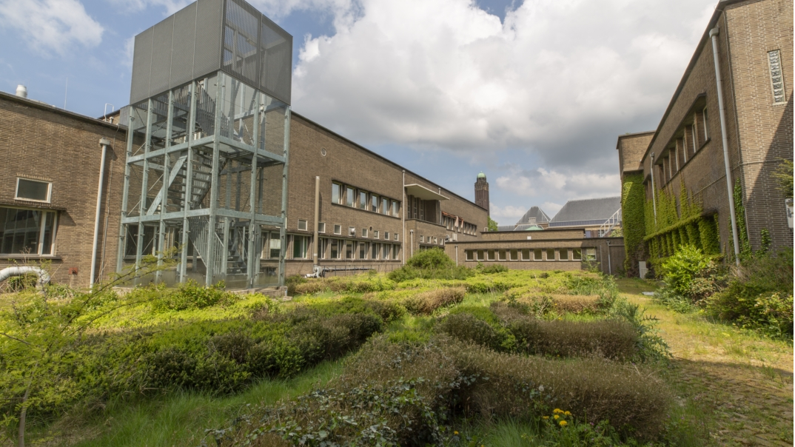

Hobby's
Mijn hobby's zijn urbex, dat zijn verlaten gebouwen bezoeken en filmen. Ik ben ook geintresseerd in ai omdat ik denk dat dat de toekomst word.
Een verlaten universiteit waar ik zelf ook geweest ben.
Nieuws
Ik haal mijn nieuws soms van mijn eigen geautomatiseerde X pagina die AI nieuws post. Ik heb dit zelf gemaakt met zelf gehoste n8n instance.